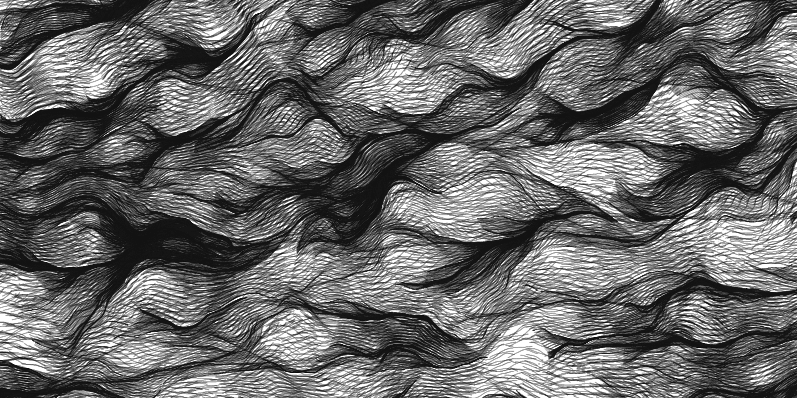
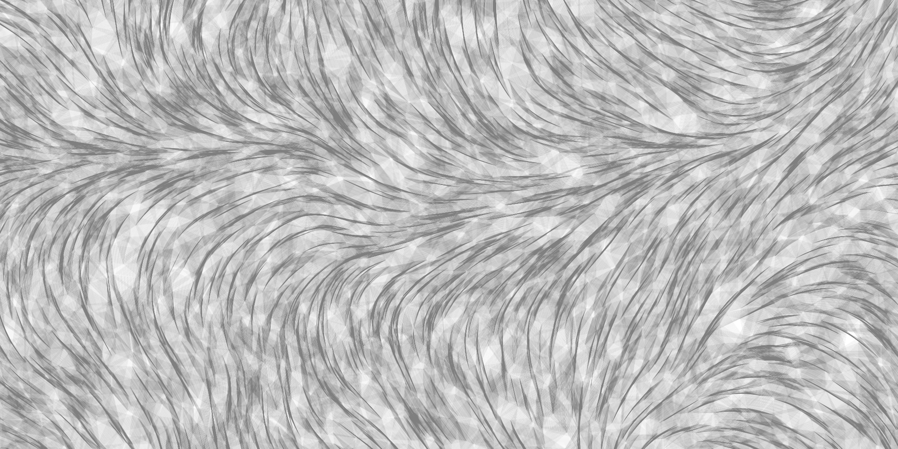
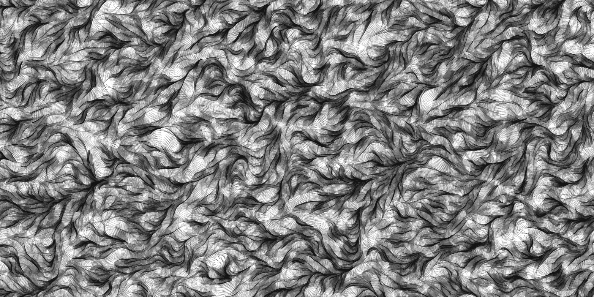
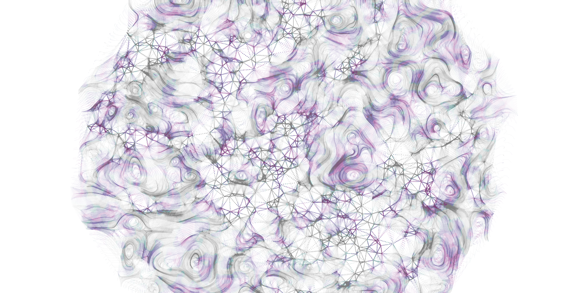

Triangulation
These prints are initialized with a set number of nodes with completely random values, and the nodes can be moved in each canvas iteration. During this iteration, a Delaunay triangulation is calculated which allows each node to be connect to its nearest neighbor at the time of calculation.
All of the prints I do can be generated at any requested size, and I can frame them if you like. I ask for $350 for each generated piece.
Please look further to see examples of the types of parameters you can request in a piece.

Generation method: Java RNG in Rectangular Pattern
200 items created
Noise Seed of 1
Motion applied to each point using Perlin Noise (d 32, m1 2, m2 0.09)
1614 Frames
|

Generation method: Java RNG in Rectangular Pattern
5,000 items created
Noise Seed of 1
Motion applied to each point using Perlin Noise (d 512, m1 4, m2 0.09)
350 frames
|

Generation method: Java RNG in Rectangular Pattern
10,000 items created
Noise Seed of 1
Motion applied to each point using Perlin Noise (d 32, m1 3, m2 0.09)
240 Frames
|

Generation method: Java RNG in Circular Pattern
3,000 items created
Noise Seed of 1
Motion applied to each point using Perlin Noise (d of 300, m1 1300, m2 0.29)
Color applied to each point using Perlin Noise (d of 64, mult 4)
174 Frames
|